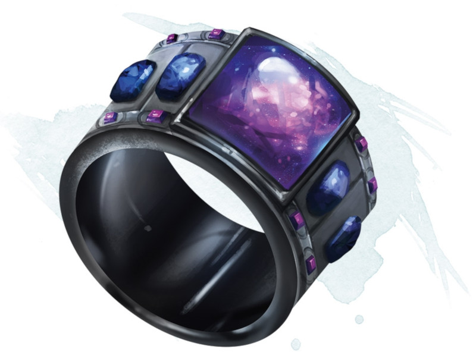

Anneau de feu d'étoiles
Anneau, très rare (nécessite un lien de nuit en extérieur)
Lorsque vous portez cette bague dans une zone de lumière faible ou de ténèbres, vous pouvez jeter lumières dansantes et lumière depuis l'anneau à volonté. Lancer un de ces deux sorts depuis l'anneau nécessite une action.
L'anneau a 6 charges pour les propriétés suivantes. L'anneau récupère 1d6 charges dépensées chaque jour à l'aube.
Lucioles. Vous pouvez dépenser 1 charge par une action pour lancer lueurs féeriques depuis l'anneau.
Boule de foudre. Vous pouvez dépenser 2 charges par une action pour créer de une à quatre sphères de foudre de 1 mètre de diamètre. Plus vous créez de sphères, moins elles seront puissantes individuellement.
Chaque sphère apparaît dans un espace inoccupé que vous pouvez voir dans un rayon de 36 mètres autour de vous. Les sphères persistent aussi longtemps que vous vous concentrez (comme pour se concentrer sur un sort), jusqu'à 1 minute. Chaque sphère émet en lumière faible dans un rayon de 9 mètres.
Par une action bonus, vous pouvez déplacer chaque sphère de 9 mètres, mais pas à plus de 36 mètres de vous. Quand une créature autre que vous est à 1,50 m ou moins d'une sphère, la sphère décharge de la foudre sur cette créature et disparaît. Cette créature doit alors faire un jet de sauvegarde de Dextérité DD 15. En cas d'échec, la créature subit des dégâts de foudre dont le montant dépend du nombre de sphères que vous avez créés.
Feu d'étoiles. Vous pouvez dépenser de 1 à 3 charges par une action. Pour chaque charge dépensée, vous lancez un trait brillant de lumière depuis l'anneau vers un point que vous pouvez voir dans un rayon de 18 mètres autour de vous. Chaque créature dans un cube de 4,50 mètres de côté depuis ce point est constellé d'étincelles et doit faire un jet de sauvegarde de Dextérité DD 15, subissant 5d4 dégâts de feu en cas d'échec, ou la moitié de ces dégâts en cas de réussite.
L'anneau a 6 charges pour les propriétés suivantes. L'anneau récupère 1d6 charges dépensées chaque jour à l'aube.
Lucioles. Vous pouvez dépenser 1 charge par une action pour lancer lueurs féeriques depuis l'anneau.
Boule de foudre. Vous pouvez dépenser 2 charges par une action pour créer de une à quatre sphères de foudre de 1 mètre de diamètre. Plus vous créez de sphères, moins elles seront puissantes individuellement.
Chaque sphère apparaît dans un espace inoccupé que vous pouvez voir dans un rayon de 36 mètres autour de vous. Les sphères persistent aussi longtemps que vous vous concentrez (comme pour se concentrer sur un sort), jusqu'à 1 minute. Chaque sphère émet en lumière faible dans un rayon de 9 mètres.
Par une action bonus, vous pouvez déplacer chaque sphère de 9 mètres, mais pas à plus de 36 mètres de vous. Quand une créature autre que vous est à 1,50 m ou moins d'une sphère, la sphère décharge de la foudre sur cette créature et disparaît. Cette créature doit alors faire un jet de sauvegarde de Dextérité DD 15. En cas d'échec, la créature subit des dégâts de foudre dont le montant dépend du nombre de sphères que vous avez créés.
| Sphères | Dégâts de foudre |
|---|---|
| 4 | 2d4 |
| 3 | 2d6 |
| 2 | 5d4 |
| 1 | 4d12 |
Feu d'étoiles. Vous pouvez dépenser de 1 à 3 charges par une action. Pour chaque charge dépensée, vous lancez un trait brillant de lumière depuis l'anneau vers un point que vous pouvez voir dans un rayon de 18 mètres autour de vous. Chaque créature dans un cube de 4,50 mètres de côté depuis ce point est constellé d'étincelles et doit faire un jet de sauvegarde de Dextérité DD 15, subissant 5d4 dégâts de feu en cas d'échec, ou la moitié de ces dégâts en cas de réussite.
Dungeon Master´s Guide (SRD)
